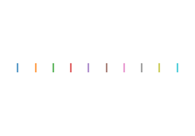
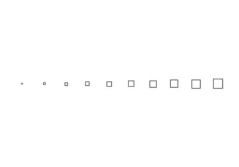
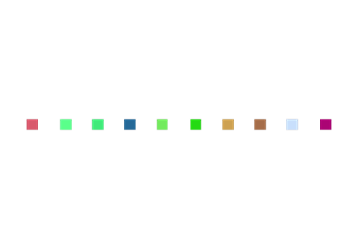
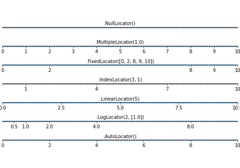

Example demoing choices for an option¶

The colors matplotlib line plots
The colors matplotlib line plots


Aliased versus anti-aliased

Marker size
Marker edge width


Marker edge color

Marker face color



Locators for tick on axis